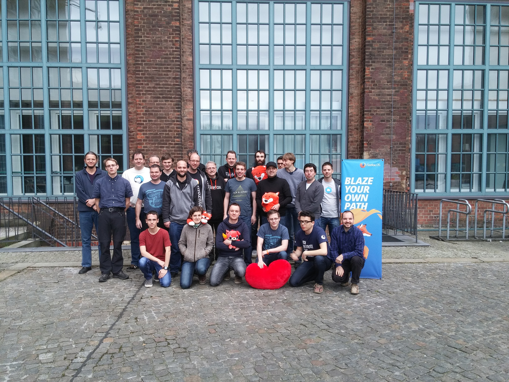
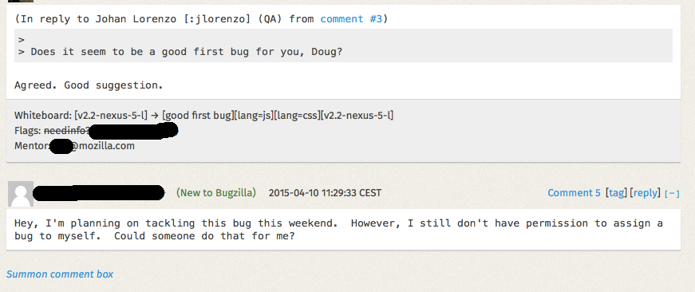
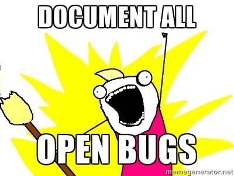
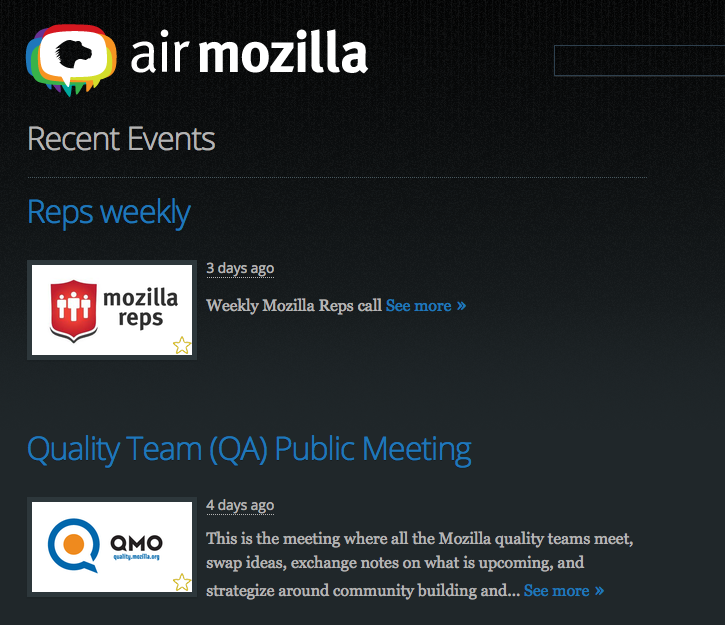
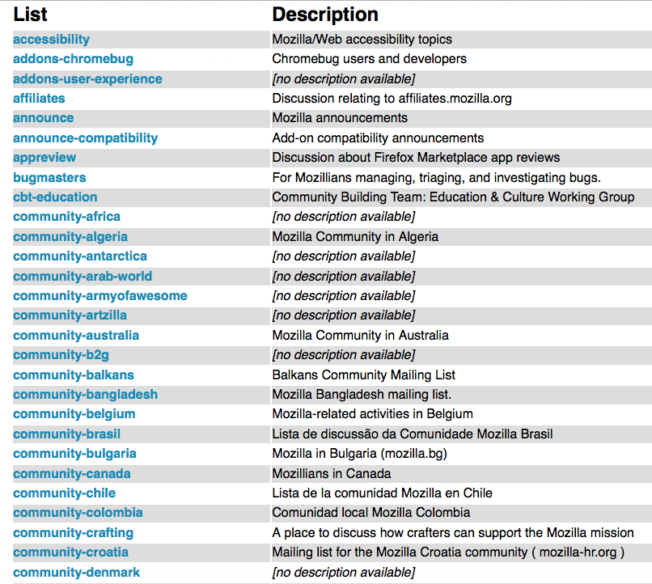
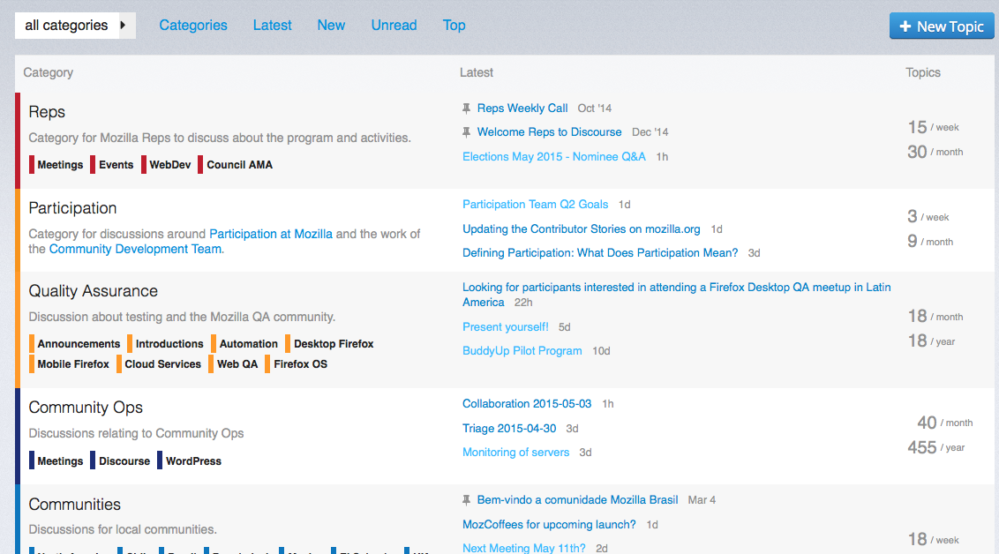
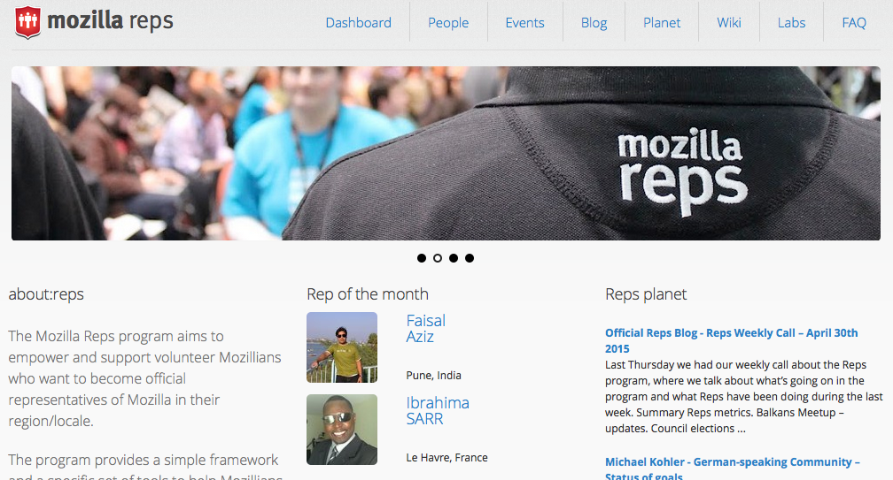
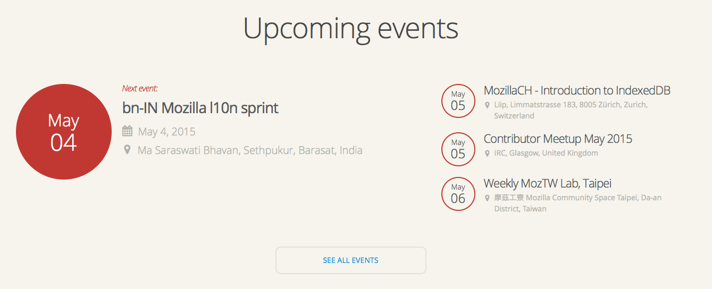
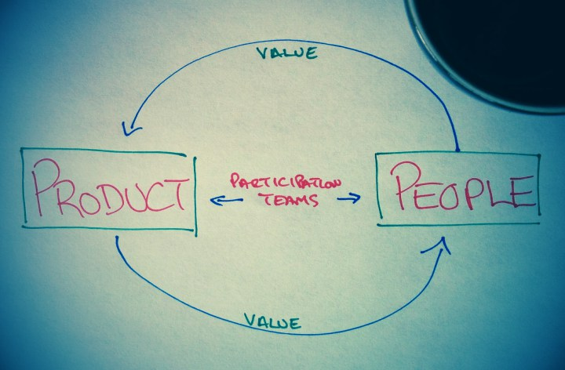
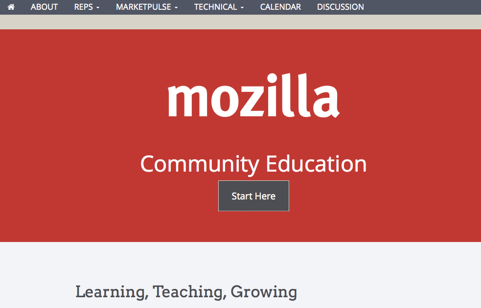

Communities are easy to build but hard to maintain
Michael Kohler,
@KohlerSolutions
or
mkohler@picobudget.com
Communities are easy to build but hard to maintain

Michael Kohler, Mozilla Rep, OSCAL Albania May 2015
About me
Michael Kohler
volunteering for Mozilla since 2008
Mozilla Representative since 2012
Web Developer @netcase.ch
mkohler.codes
Bugs
Mentor open bugs!

Think about non-coders
Documentation

Meetings - public!

Communication - Mailing lists

Communication - forum like

Listen to feedback!
Reps

Meetups

Recognition
Participation

Education

Thanks
Michael Kohler
Mozilla Reps
@KohlerSolutions
Slides
:
mkohler.codes
Photo by Yortw